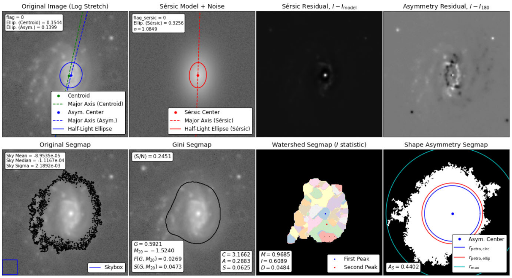

<!-- Title and description will be handled by the theme layout -->
<!-- Add a navigation bar under the description -->
<nav class="navbar">
  Compilation of results from a non-parametric analysis performed with the Astromorphlib code using publicly available imaging data.
  List of Galaxy Clusters:   
  <ul>
    <li><a href="MKW4/MKW4.html">MKW4</a></li>
    <li><a href="MKW6/MKW6.html">MKW6</a></li>
    <li><a href="A168/A168.html">A168</a></li>
    <li><a href="A119/A119.html">A119</a></li>
    <li><a href="MS116/MS116.html">MS116</a></li>
    <li><a href="A1644/A1644.html">A1644</a></li>
  </ul>
</nav>

<style>
/* Increase font size for all navigation text */
.navbar {
  font-size: 1.2em; /* Increased from typical 1em */
}

.navbar ul {
  font-size: 1.1em;
}

.navbar li {
  font-size: 1.1em;
}

.navbar a {
  font-size: 1.1em;
  font-weight: bold;
}
</style>


<p align="right">Image from Krabbe et al.(2024)</p>
<!-- Additional content can go below -->
